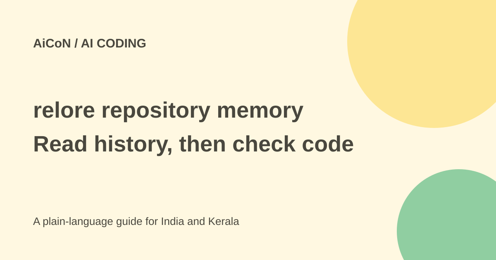

relore: repository memory, source checks and setup limits
relore helps a coding agent find old repository decisions and check them against current code. It can save duplicate work, but its history index is not a live or complete record of every decision.

What problem does relore solve?
In a long-lived software project, the reason for a design may sit in an old issue, review or pull request rather than in a code comment. Hugging Face built relore, short for repository lore, to connect those discussions with the repository's current code.
Its official example starts with a coding agent about to work on a bug that already had several proposed fixes. Finding the related pull request avoided duplicate work. Reading the maintainer's reasoning then showed that the fix needed a wider audit.
History and code in one service
The project indexes issue and pull-request history and keeps a working clone beside it. Both are served over one HTTP API. The history tools answer who said what and why; code tools help check whether the old statement still applies.
The documented inflight command looks for work already in progress. thread shows discussion evidence. why connects a file and line to its history. grep, symbol, copies and language-specific navigation help inspect the code itself. Read the current command documentation before relying on a particular verb.
Author labels are useful, not final truth
relore distinguishes maintainer decisions, contributor claims and machine-authored content. The public package description says authoritative filtering keeps decisions associated with write access, and machine authors are excluded by default.
A maintainer's earlier decision can still be out of date. A contributor's diagnosis can be correct when the code supports it. Keep the comment's source, age and actual wording, then test the claim against the current project instead of treating a label as unquestionable authority.
Is it free?
The public project and PyPI package list the Apache-2.0 licence. That makes the software open source; it does not make the database, hosting, indexing or agent/model usage cost-free. Private repository access also needs appropriate permission.
The PyPI page checked here lists Python 3.10 or later and release 0.3.17 dated 18 September 2026. The repository's operations page still says there is no PyPI release and shows installation from its main branch. That mismatch is a reason to check compatible client and server versions, not to copy an old install instruction without review.
What does setup require?
The operations documentation says the daemon needs PostgreSQL and a GitHub token with read access to issues and pull requests. It says write permission is not needed. Indexing, polling, reconciliation and a working clone are part of running the service.
The same documentation says client and daemon versions must match; the daemon rejects incompatible requests. It describes a full-history backfill as resumable and potentially taking about a day. Actual time depends on the repository and environment.
A sensible pilot
- Read the official repository, licence and current operations guide.
- Choose a small repository you are permitted to index.
- Check compatible versions and the database requirements.
- Use the least GitHub read access required and keep tokens outside source code.
- Index the history and check its reported freshness.
- Try a known issue with an existing fix and verify the returned comments.
- Compare the old decision with current code and tests.
- Only then connect a coding agent with suitable service access and review rules.
Freshness and missing history
The package description explicitly says each thread records its last indexing visit, and later GitHub changes may be unknown. Collector poll times do not guarantee that every thread is fresh. The index can therefore miss a new review or recently merged fix even if the service is running.
Meetings, private chat and other sources outside the collected GitHub record remain invisible. An empty search means the index found nothing for that query, not that the project never discussed the issue. Follow current linked sources for consequential changes.
Security and India context
Private issues and code can contain customer details, credentials or unreleased plans. Check where the index and clone are hosted, who can query them and how deletion is handled. Do not expose a repository-memory API publicly without the project's documented access controls.
For an Indian development team, the value is better project context rather than a region-specific consumer offer. Start with a permitted test project and measure duplicate work avoided and review time. Do not promise that indexing automatically makes every patch correct.
What changed since the original AiCoN post?
This guide adds deployment costs, current version evidence, the install-document mismatch and explicit index-freshness limits. It explains why a maintainer-labelled comment still needs a current-code check.
Frequently asked questions
Does relore know what happened in a meeting?
No, unless that decision entered a collected source.
Does Apache-2.0 mean hosting is free?
No. Infrastructure and connected AI use can cost money.
Can an empty result prove no earlier fix?
No. Check coverage, freshness and the live repository.
Sources: Hugging Face introduction · Public package and licence · Current repository · Operations guide, with version caveat. Checked 7 October 2026.